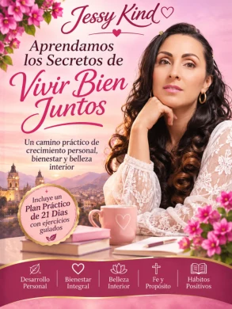
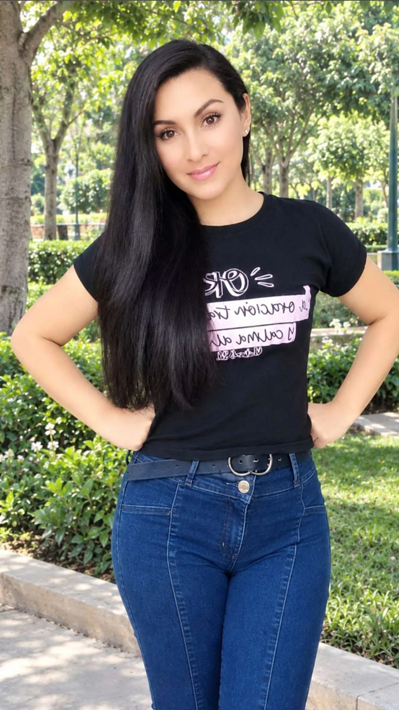
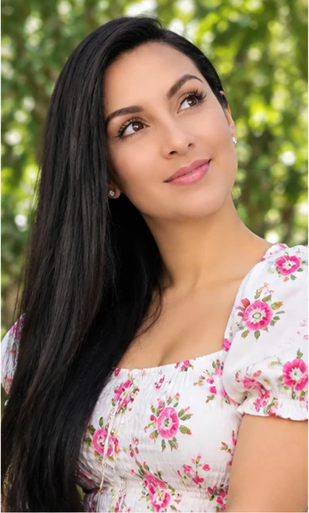
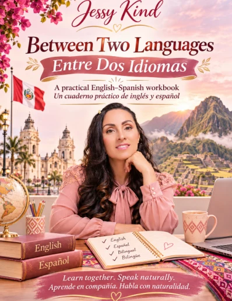
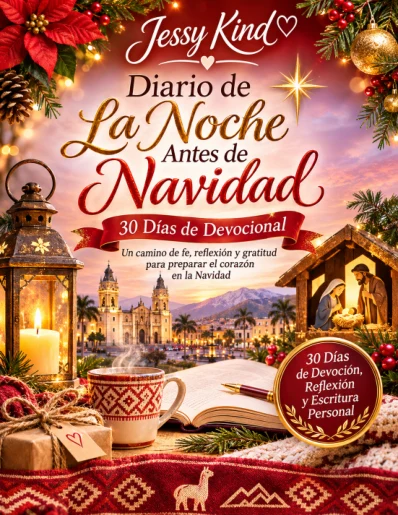

Aprendamos los Secretos de Vivir Bien Juntos
21 días de fe, amor y propósito, con reflexiones, ejercicios y oraciones.
Devocional en español$16.99 USD · aprox. S/ 58.64 PEN
Un espacio para crecer con fe, descubrir nuestra belleza interior, aprender cada día y compartir lo mejor de nosotros.
Juega y aprende
Soy profesora de inglés en Lima, Perú. Enseño inglés básico a adolescentes y creo que aprender puede abrirnos nuevas oportunidades para crecer.
Me inspiran la fe en Dios, la disciplina, el bienestar, la belleza interior y exterior, y la búsqueda de un buen propósito de vida. Deseo compartir experiencias, aprender de otras personas y explorar nuevas posibilidades.
Lima, Perú Educación Fe y bienestar
Enseño inglés básico a adolescentes y creo materiales sencillos para practicar vocabulario, conversación, escritura y pronunciación. Aquí compartiré recursos y novedades sobre futuras oportunidades de aprendizaje.
Las clases particulares y las reservas todavía no están habilitadas.
¡Juega una lección gratis! →
Muy pronto compartiré reflexiones, enseñanzas de vida, fe, bienestar y experiencias para seguir creciendo juntos.
Reflexiones de vida, aprendizaje de idiomas y momentos para escribir desde el corazón.

21 días de fe, amor y propósito, con reflexiones, ejercicios y oraciones.
Devocional en español$16.99 USD · aprox. S/ 58.64 PEN

15 capítulos para practicar inglés y español, con diálogos y pronunciación.
Cuaderno bilingüe$9.99 USD · aprox. S/ 34.48 PEN

30 días para leer, reflexionar, agradecer y escribir camino a la Navidad.
Diario navideño$7.00 USD · aprox. S/ 24.16 PEN
Precios en soles aproximados según el tipo de cambio de referencia del 5 de noviembre de 2026 (1 USD ≈ S/ 3.4519). El monto definitivo y la moneda de cobro aparecerán en la página segura de pago.
Para consultas sobre mis libros, educación o colaboraciones, escríbeme por correo electrónico.
Enviar un correo a Jessy